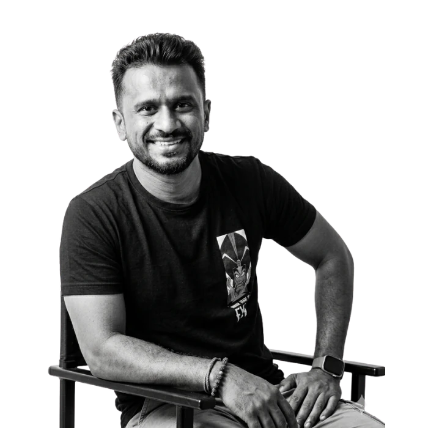
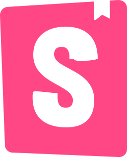

I design it. I build it. I make it work.
I’m Sandip Bhosale, a senior product designer in Pune with more than ten years in UX for enterprise SaaS, DevOps and fintech. I use Claude and Figma MCP to turn requirements into prototypes people can click through, before engineering starts.

From traditional product designer to AI-powered
The craft is the same. The process around it has changed. Open a stage to see the detail.
RequirementsAI call summariesScattered notes
I record each call and file the Zoom AI summary as a Confluence page in the feature’s folder, linked from the Jira ticket. Claude reads the tickets, epics and every page.
- Zoom
- Confluence
- Jira
- Claude
Notes from meetings, spread across documents and chats.
WireframesOrchestrator draftsHand-drawn in Figma
The orchestrator drafts the wireframe from Jira and Confluence. I only open Figma when Claude misses my layout or I want to compare several layouts. I sketch them, and Claude builds the wireframe from my sketches.
- Orchestrator
- Figma, when needed
Drawn by hand in Figma from my own reading of the requirements.
FeedbackWorking-version reviewsFigma comments
Stakeholders review a working version. If there’s a Figma file or sketch, they comment there. If not, I record the feedback on the Zoom call, and Claude adjusts the design from the AI summary.
- Zoom
- Figma
Stakeholders left comments on Figma files.
High fidelityAfter the flow is agreedStarted early, reworked
Starts only after stakeholders confirm the flow, and it’s built from our Storybook components.

Storybook- Orchestrator
Started early, then reworked whenever the flow changed.
Quality checkAudit agent, then hand testingManual review
An audit agent checks that every component is current and comes from Storybook. Then I test every use case and state by hand.
- Audit agent
Manual review of consistency.
HandoffNarrated video and PDFFigma specs to interpret
A walkthrough call with the developers, then a narrated MP4 and a PDF from our handoff plugin.
- MP4
Specs and documents for developers to interpret.
Selected work
A selection of product challenges, design decisions and experiences. Select a project to explore the full case study.
Experience
Pune, India
Senior Product Designer
Lead UX for an enterprise DevOps platform. Built the first functional digital twin of IPLM, run an AI-assisted audit-and-refine cycle, and delivered the Phase 2 IP Catalog enhancements.
Pune, India
Senior Product Designer, Founding Designer
Moved the company from code-first development to a user-centred design lifecycle. Designed B2B card onboarding and a multi-vertical financial platform, and built a multi-product design system.
Earlier roles
- Larsen & Toubro Infotech (LTI)Project Lead, UI/UXJun 2018 to May 2019
- Wishpoint (Scandid)UI/UX DesignerJan 2017 to Jun 2018
- Techvisions IT SolutionsUX/UI DesignerJan 2016 to Dec 2016
- Skadas CreativeCreative HeadOct 2014 to Dec 2015
- PenatraiteSenior Graphic DesignerFeb 2014 to Oct 2014
- Titanium InteractiveGraphic DesignerNov 2011 to Jul 2012
- AnimaksGraphic DesignerOct 2009 to Oct 2011
What I work with
Product design
Product design strategy, UX strategy, interaction design, information architecture, user research, user journeys, wireframing and high-fidelity prototyping.
AI-assisted development
Claude, Figma MCP, MCPs and connectors, agents, skills, AI workflow orchestration, functional prototyping and digital twins.
Design systems and delivery
Design systems, governance, DesignOps, design audits, specifications and developer handoff.
Tools and domains
Figma, Confluence, Jira, enterprise SaaS, DevOps platforms, fintech, B2B platforms and role-based access control.
Get in touch
Whether it’s a role, a project, a collaboration, or just a conversation about design and AI, I’d like to hear from you. Email is the quickest way to reach me.